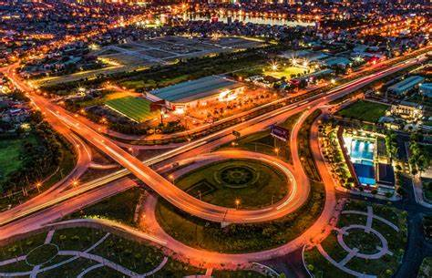

HELLO, IT'S NICE TO MEET YOU
Trong bức tranh phát triển không ngừng của đất nước, thành phố Hải Dương nổi bật với sự kết hợp hài hòa giữa nét đẹp hiện đại và bản sắc truyền thống sâu sắc. Với vị trí chiến lược ở trung tâm kinh tế, văn hóa và chính trị của vùng đồng bằng sông Hồng, Hải Dương không chỉ là điểm đến của sự phát triển mạnh mẽ mà còn là bảo tàng của những giá trị văn hóa lâu đời của dân tộc.
Trong những con phố nhỏ xinh xắn của Hải Dương, hương thơm của gia vị và màu sắc của món ăn đang bừng lên một cuộc lễ hội vị giác đầy mê hoặc.
Hải Dương, nơi tôi đặt chân đến, không chỉ là vùng đất của những cánh đồng lúa bát ngát mà còn là thiên đường của ẩm thực đa dạng và phong phú.
Khi bước vào thế giới của ẩm thực Hải Dương, bạn sẽ được chìm đắm trong hương vị tinh tế của những món ngon truyền thống và đặc sản độc đáo.
Từ bánh đậu xanh mềm mịn, món ăn tráng miệng ngọt ngào đến chả cá kho quả thơm phức, mỗi món ăn đều mang đậm đà hương vị quê hương.
Điều đặc biệt của ẩm thực Hải Dương không chỉ là những món ngon đặc sản mà còn là sự kết hợp tinh tế giữa các nguyên liệu tự nhiên
và bí quyết chế biến của người dân địa phương. Từ cách chế biến tinh tế đến cách bài trí đẹp mắt, mỗi món ăn đều là một tác phẩm nghệ thuật đầy sáng tạo và tâm hồn.
Hãy để VN Foods giúp bạn hiểu hơn về văn hoá ẩm thực nơi đây nhé!